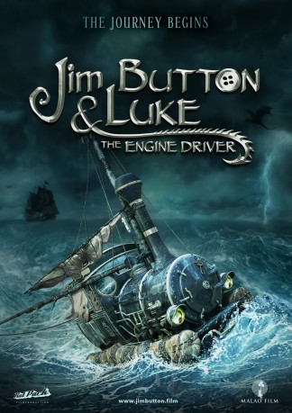

IMDB-Wertung: 6.6 / 10
IMDB-Wertung: 6.6 / 10  Metascore:
Metascore: 
An orphan boy in search of his origin. A young princess held prisoner in deadly Dragon City. Jim and his friend Luke discovering mysterious lands on the quest of a lifetime.
 gesehen am 03.11.2018
gesehen am 03.11.2018 IMDB-Wertung: 6.6 / 10 Metascore:
An orphan boy in search of his origin. A young princess held prisoner in deadly Dragon City. Jim and his friend Luke discovering mysterious lands on the quest of a lifetime.
Jahr: 2018
Dauer: 105 Minuten
FSK: 0
Land: Deutschland Studio: Warner Bros.Tonspuren:
Untertitel: Deutsch,
Auflösung: 1080p (1920x800) Größe: 6727 MB
Genre: Abenteuer, Fantasy, Familie
Regisseur: Dennis Gansel
Drehbuch: Dirk Ahner, Andrew Birkin, Michael Ende, James V. Hart, Sebastian Niemann
Soundtrack: Ralf Wengenmayr
Darsteller:
 Shirley MacLaine als Mrs. Grindtooth
Shirley MacLaine als Mrs. Grindtooth Michael Herbig als Nepumuk
Michael Herbig als Nepumuk Uwe Ochsenknecht als König Alfons
Uwe Ochsenknecht als König Alfons Milan Peschel als Tur Tur
Milan Peschel als Tur Tur Henning Baum als Lukas
Henning Baum als Lukas Christoph Maria Herbst als Herr Ärmel
Christoph Maria Herbst als Herr Ärmel Annette Frier als Frau Waas
Annette Frier als Frau Waas Volker Michalowski als Postbote
Volker Michalowski als Postbote Rick Kavanian als Die Wilde 13
Rick Kavanian als Die Wilde 13 Thomas Fritsch als Erzähler
Thomas Fritsch als Erzähler Hon Ping Tang als Guard Lieutenant
Hon Ping Tang als Guard Lieutenant Darryl Quon als Langer Bonze
Darryl Quon als Langer Bonze Judy Winter als Frau Mahlzahn
Judy Winter als Frau MahlzahnDatei: X:\Kinder Collections\Augsburger Puppenkiste\Jim Knopf und Lukas der Lokomotivführer (2018, FSK0, 1920x800).mkv seit 02.11.2018
Festplatte: Kinder-Filme+Trick
 Alle Filme aus Gruppe 'Kinder Collections\Augsburger Puppenkiste'
Alle Filme aus Gruppe 'Kinder Collections\Augsburger Puppenkiste'